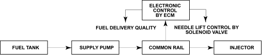
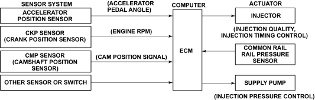

Fuel and Emissions Systems
|
11-26 |
Fuel System Outline
System Outline
This system also provides the following functions:
System Configuration
Divided by function, the system can be classified according to the fuel system and the control system.
Fuel System
The high-pressure fuel that is generated by the supply pump is distributed to the cylinders by way of a common rail.
Then, the electromagnetic valves in the injectors open and close the nozzle needle valve to control the starting and ending of the injection of fuel.

Control System
Based on the signals received from sensors that are mounted on the engine and on the vehicle, the ECM controls the timing of the current and the length of time that the current is applied to the injectors, thus ensuring that an optimal amount of fuel is injected at an optimal time.
The control system can be broadly classified according to the following electronic components; sensors, computers, and actuators.
